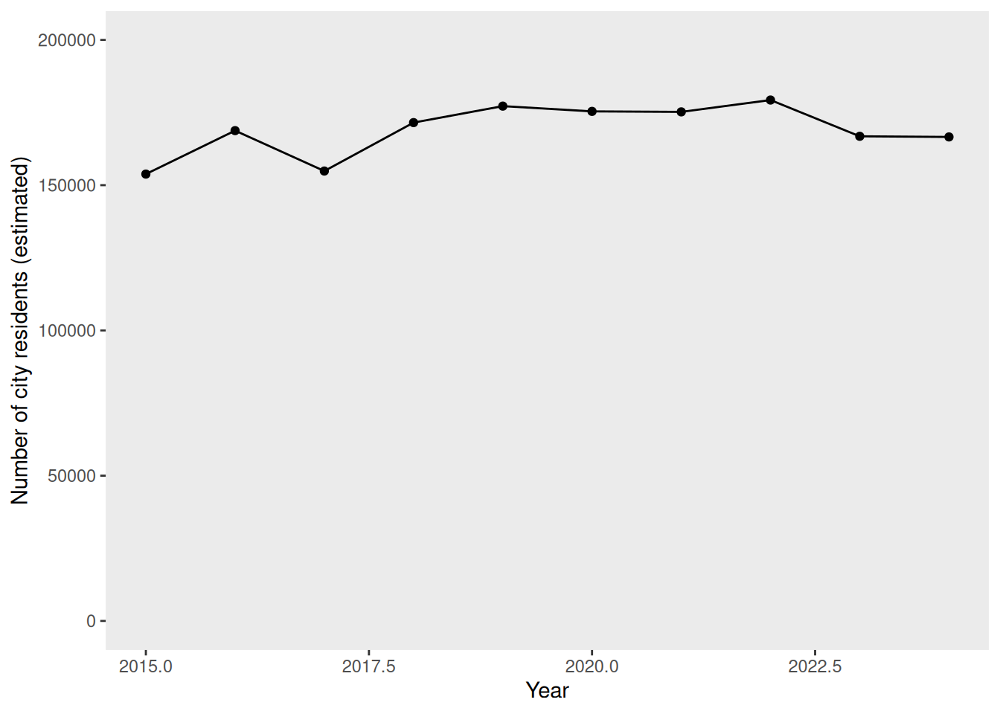
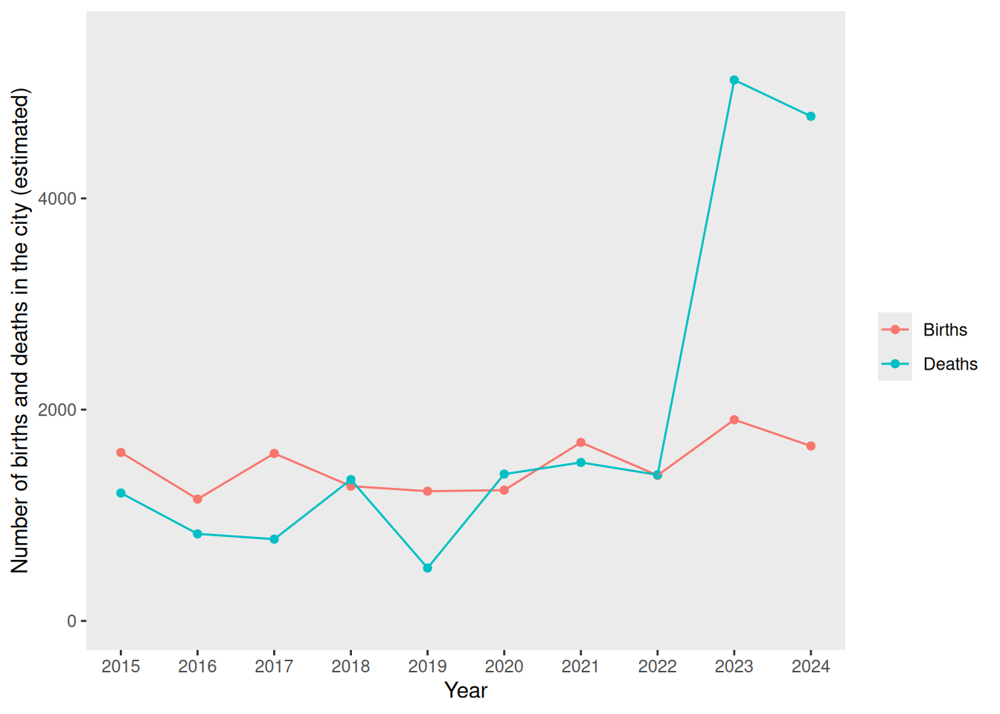
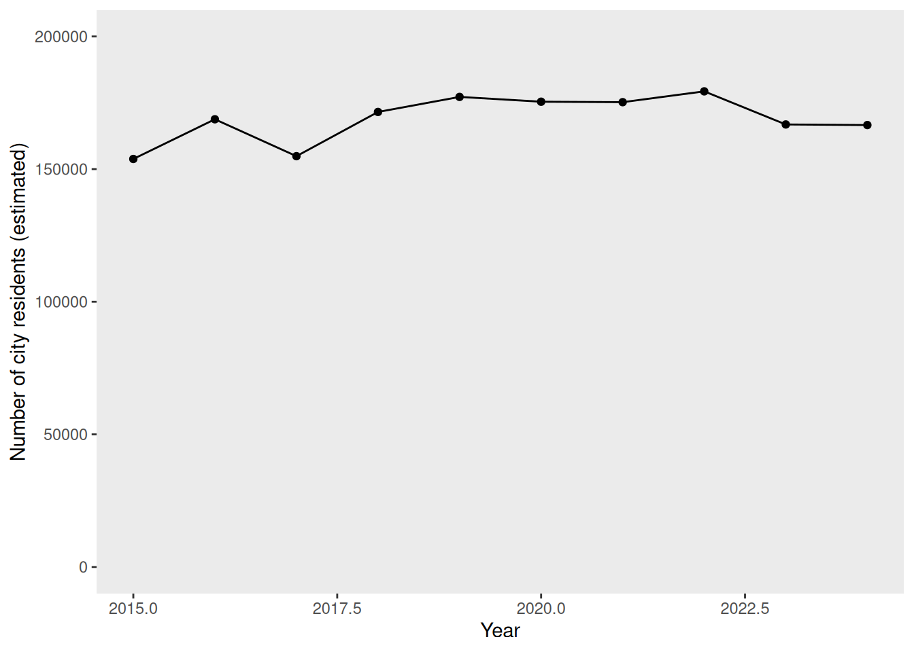
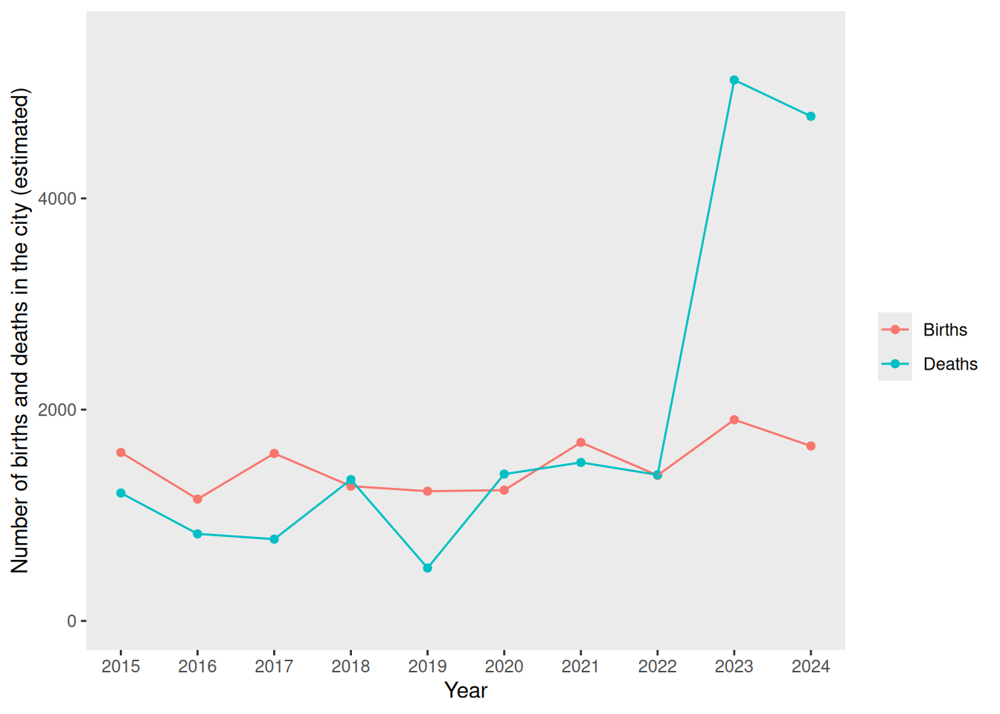
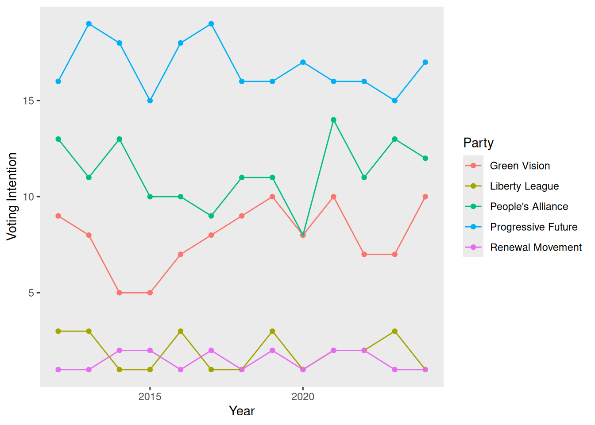
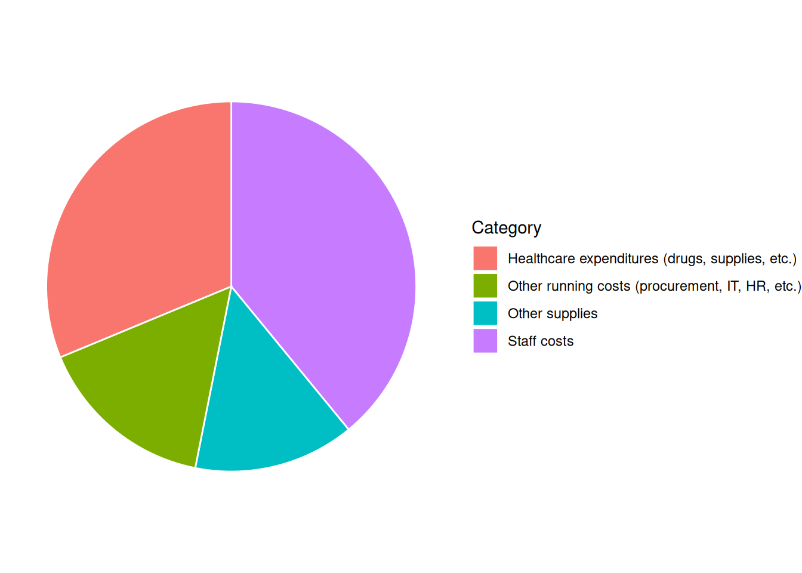

Anxieties Over Possible Outbreak of Disease X in Airtyre
22 February, 2026
Anxiety surges in Airtyre as health officials investigate a potential outbreak of Disease X, raising alarm bells across the region. Though yet to be formally confirmed as a pandemic, suspicions have intensified following a recent distressing surge in patients presenting with symptoms indicative of Disease X.
Officials have been referring to the disease as ‘Disease X’, because the exact nature and cause of the disease are as-yet unknown. Large numbers of patients have been presenting to the hospital with a range of concerning symptoms, and GP surgeries around the city are reporting that they have been unusually busy for this time of year. Residents of Airtyre experiencing any of these symptoms are advised to contact their GP or dial 111 for health advice.
In a press release, the director of the Westview in Airtyre noted a disquieting uptick in individuals reporting symptoms consistent with those associated with Disease X. Fears were first raised when the local GPs began reporting an unusual increase in patients with symptoms of Disease X. While investigations are still ongoing, the possibility of a pandemic outbreak dominates, prompting concern from health agencies.
In response to the growing concerns, health officials have begun several contingency plans, and Airtyre have convened an Emergency Pandemic Response Team, which will be meeting on 2026-02-27 and attempting to find solutions that will stop the spread of the pandemic in Airtyre.
The First Minister assured residents that authorities are leaving no stone unturned in their efforts to safeguard public health, and furthermore urged residents to remain vigilant and cooperate with health directives from the Airtyre City Council. A statement released by the First Minister’s office read: “While there is no confirmation of an outbreak at this time, we are taking this situation very seriously.”
The people in Airtyre have already begun to worry the possibility of a pandemic; potential consequences such as school closures, economic repercussions, and strain on healthcare resources, have sparked apprehension among residents, underscoring the need for swift and decisive action.
Contact Information for Further Updates:
More information will be posted on the Airtyre website as the situation develops: https://www.AirtyreCouncil.co.uk
The Airtyre Emergency Pandemic Response Team can be contacted on +44 01382 3352 1845 or at pandemic_response@Airtyre.co.uk
About the Author:
Jamie Cookson is a health correspondent at the Airtyre Courier, specializing in public health and safety issues.She can be contacted at jc2646@AirtyreCourier.com.

Airtyre was granted city status in 1837. Located near Glenorchy Gorge, Airtyre is noted for the site of a historic battle. Major industries in the city include publishing, food and beverage, and agriculture.
Airtyre is well-served by public transport: there are 3 bus companies operating routes that cover the city and outlying areas, and road links to other major cities (the A41 to Kilmarnock and the the A43 to Motherwell.) Airtyre is further connected to regional towns and villages by rail services from the Airtyre railway station. Airtyre is also served by Airtyre Airport, which is 10 miles from the city centre and which offers daily flights to Oslo, Prague, and Palermo.
Notable buildings in the city include Airtyre Castle, Airtyre Cathedral, and Riverside Hall. Airtyre also has botanical gardens with several greenhouses and a nature preserve. The Airtyre film festival is held annually in May, and tourists also flock to Airtyre to appreciate the historic architecture in spring. Airtyre is also noted as a hub of local arts and culture, with Andrews Hall and The Dramatic Duck drawing in crowds for performances from local and international artists. The city is renowned for sports, with the Hornets and Robins teams representing the city for rugby union and cricket, respectively.
Some of the key Airtyre features are summarized in the list below.
Refer to the “Data” tab for information about the city demographics, voting and polling data, and more information about the hospital.
Some of the most recent records from Westview have been collated below.
Some of the most recent death records identified as being potentially due to the pandemic in Airtyre have been collated below:
The following list of references is provided as a starting place for you to begin exploring various aspects of biology, diagnostics, epidemiology, and treatment, when dealing with an unknown pathogen. However, this is by no means an exhaustive list: you should further explore the relevant peer-reviewed literature independently.
Research response to pathogen X during a pandemic - WHO consultation report
Williams, B.A., Jones, C.H., Welch, V. et al. Outlook of pandemic preparedness in a post-COVID-19 world. npj Vaccines 8, 178 (2023). https://doi.org/10.1038/s41541-023-00773-0
Azizi, Ali et al. “Future directions in combating outbreaks at CEPI Centralized Laboratory Network.” Human vaccines & immunotherapeutics vol. 21,1 (2025): 2561458. doi:10.1080/21645515.2025.2561458
Chen, Wenxiu et al. “Utilizing wastewater surveillance to model behavioural responses and prevent healthcare overload during”Disease X” outbreaks.” Emerging microbes & infections vol. 14,1 (2025): 2437240. doi:10.1080/22221751.2024.2437240
Zhao, Huixuan et al. “Accelerating drug discovery for Disease X via an AlphaFold2 driven drug repositioning strategy.” Physical chemistry chemical physics : PCCP vol. 27,42 22354-22365. 29 Oct. 2025, doi:10.1039/d5cp01365h
Kavruk, Murat et al. “Biotechnological Preparedness for Novel Pandemics: Diagnostic Performance of IVDS Against SARS-CoV-2.” MicrobiologyOpen vol. 14,4 (2025): e70042. doi:10.1002/mbo3.70042
Pellejero-Sagastizábal, Galadriel et al. “Delayed correct diagnoses in emerging disease outbreaks: historical patterns and lessons for contemporary responses.” Clinical microbiology and infection : the official publication of the European Society of Clinical Microbiology and Infectious Diseases vol. 31,8 (2025): 1298-1306. doi:10.1016/j.cmi.2025.04.007
Wu, Zhenchao et al. “To face Disease X: building resilient futures in the age of emergent threats.” BMJ global health vol. 10,7 e020479. 5 Jul. 2025, doi:10.1136/bmjgh-2025-020479
Your committee has recently received a great deal of correspondence regarding the pandemic in Airtyre. A representative sample of these e-mails is shown below.
Your committee has also been monitoring news and published blog posts about the pandemic in Airtyre, in order to better gauge public opinion. A representative sample of these is shown below.
Briefing:
Based on collated hospital reports and death certificates, it is believed that there have been 14 deaths due to Disease X in Airtyre thus far
There are currently 424 patients in the Westview with confirmed Disease X, or symptoms consistent with Disease X
There are currently 25 patients currently in the ICU with confirmed Disease X
The current population of Airtyre (as of 2024) is 159253. The demographic data for the city is shown below.


The current provost of Airtyre was elected in 2017, as a member of a popular political party who made a number of election promises regarding a “Green New Deal” for Airtyre.

There are currently 162 elected councillors, representing the political parties in Airtyre as follows:
| Political Party | Number of Seats |
|---|---|
| Liberty League | 6 |
| People's Alliance | 14 |
| Progressive Future | 22 |
| Green Vision | 15 |
| Renewal Movement | 9 |
The overall budget (expenditures) for the previous financial year was £548238032. A summary of expenditures by category for this financial year is shown below.

In addition to these expenditures, the city council has a budget for an emergency fund, projected to be £59996 for the current financial year.
The annual operating budget for the last financial year was £6 million, and average expenditures are shown by category in the figure below.

The Westview, built in 2013, is the main hospital in Airtyre.
The Westview has units specialising in maternity care, endocrinology, oncology, nephrology and an eye clinic.

154
11
9
87%
90%
96%
123
22
1448
Statement from Westview: As part of the Westview’s ongoing commitment to excellence, the hospital diligently monitors key performance indicators and strives to meet established targets. While progress has been made, we acknowledge that certain goals remain unmet. We are actively working to address these challenges and enhance patient care.
Key Performance Targets:
Waiting time for an ambulance (category 2 event) should be no more than 18 minutes
95% or more of all patients waiting in A&E should be seen in less than 4 hours
85% of all patients waiting for cancer treatment should be seen within 62 days
6545
78%
74 min
68%
66%
7488
The Westview hospital strives to meet stringent targets for infection control and antibiotic stewardship to ensure patient safety and combat antimicrobial resistance. Infection control protocols are critical in maintaining high standards of hygiene and patient care. Similarly, antibiotic stewardship programs are essential for optimizing the use of antimicrobials, thereby reducing the risk of resistance and ensuring effective treatments for future generations.
There were 5 more hospital-acquired MRSA infections in 2026 than there were in 2025.
There were 2 fewer hospital-acquired Clostridiodes difficile infections in 2026 than there were in 2025.
There were 6 more hospital-acquired Candida auris infections in 2026 than there were in 2025.
8
1
8
88%
10%
59%
The Westview monitors the prevalence of COVID-19 and other viruses in the community to ensure they are prepared for potential surges in patient admissions, enabling them to allocate resources and staff efficiently. By tracking these trends, the hospital can implement timely public health interventions and provide accurate information to the community to mitigate the spread of infections. Additionally, continuous monitoring helps in identifying emerging outbreaks early, allowing for a rapid response that minimizes the impact on public health and healthcare services.
There were 16 more COVID-19 cases this week than in the previous week.
We are seeing an increase in infections caused by other respiratory viruses (e.g., influenza, adenovirus, rhinovirus, RSV).
108
626
22%
93%
COVID-19 health protection guidance released by Public Health Scotland
Tackling antimicrobial resistance 2019–2024: The UK’s five-year national action plan
UK One Health Report - Joint report on antibiotic use and antibiotic resistance, 2013–2017
Scottish One Health Antimicrobial Use and Antimicrobial Resistance in 2021
Mer, Mervyn et al. “Critical Care Pandemic Preparation: Considerations and Lessons Learned from COVID-19.” Critical care clinics vol. 38,4 (2022): 761-774.
Tacconelli, Evelina et al. “Challenges of data sharing in European Covid-19 projects: A learning opportunity for advancing pandemic preparedness and response.” The Lancet regional health. Europe vol. 21 (2022): 100467.
Adelaja, I., Sayma, M., Walton, H., McLachlan, G., de Boisanger, J., Bartlett-Pestell, S., Roche, E., Gandhi, V., Wilson, G. J., Brookes, Z., Yeen Fung, C., Macfarlane, H., Navaratnam, A., James, C., Scolding, P., & Sara, H. (2020). A comprehensive hospital agile preparedness (CHAPs) tool for pandemic preparedness, based on the COVID-19 experience. Future healthcare journal, 7(2), 165–168.
Matta, G. Science communication as a preventative tool in the COVID19 pandemic. Humanit Soc Sci Commun 7, 159 (2020).
Abdool Karim, Salim S. “Public understanding of science: Communicating in the midst of a pandemic.” Public understanding of science (Bristol, England) vol. 31,3 (2022): 282-287.
Royan, Regina et al. “Use of Twitter Amplifiers by Medical Professionals to Combat Misinformation During the COVID-19 Pandemic.” Journal of medical Internet research vol. 24,7 e38324. 22 Jul. 2022, doi:10.2196/38324
Tait, Margaret E et al. “Serving the public? A content analysis of COVID-19 public service announcements airing from March - December of 2020 in the U.S.” Preventive medicine reports vol. 29 (2022): 101971.
You may choose to include mathematical modeling as part of your decision making (for example, using an epidemic calculator or other models); if you do so, you should provide details of your modelling and predictions when you submit your group’s pro forma.